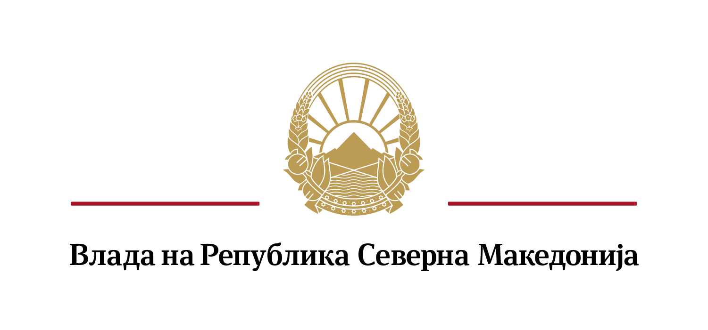

Министерството за здравство и Управувачкиот комитет за координација и управување во системот за управување со кризи при Владата, им се обраќа на сите граѓани на Република Северна Македонија со барање за помош со цел да се надмине состојбата создадена од Ковид-19.
Секојдневно од Министерството за здравство преку Комисијата за заразни болести, се информира главно за сериозно болните и лицата со потешка состојба од болеста со симптоматологија, лица кои побарале лекарска помош. Со цел да имаме најточна статистика и побрзо укинување на тековните мерки и враќање на населението во нормален ритам, потребни се што повеќе информации и од граѓаните.
Преку солидарност на индивидуално ниво и преку одговорно учество во процесот, ќе можеме да си помогнеме сите заедно побрзо и со помалку загуби во општеството, да ја надминеме состојбата со Ковид-19 за покус временски период.